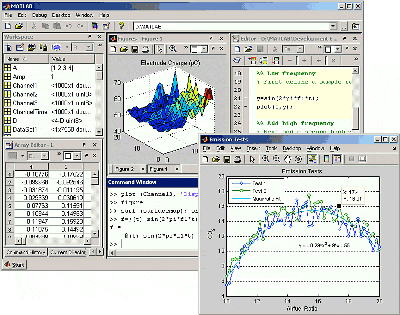
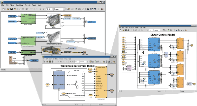
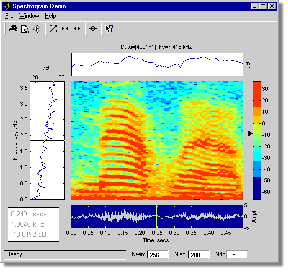
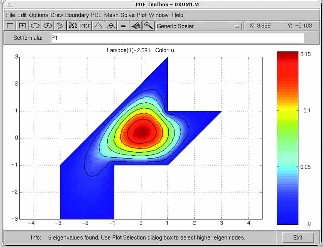

|
Welcome to the MATLAB Tutorials Page. MATLAB is a high-level technical computing language and interactive environment for algorithm development, data visualization, data analysis, and numerical computation. Using MATLAB, you can solve technical computing problems faster than with traditional programming languages, such as C, C++ and Fortran. Other uses include modeling, simulation and prototyping, scientific and engineering graphics, and application development, including graphical user intrface building.

MATLAB has many toolboxes available at the disposal of the user that is not normally available in high level programming languages such as:
- Simulink: Simulink is a platform for multidomain simulation and Model-Based Design of dynamic systems. It provides an interactive graphical environment and a customizable set of block libraries that let you accurately design, simulate, implement, and test control, signal processing, communications, and other time-varying systems. This Toolkit is required for ELE 639, the Controls Systems course taken here at the undergraduate level @ Ryerson University.

The Signal Processing Toolkit: The Signal Processing Toolbox is a collection of industry-standard algorithms for analog and digital signal processing. It provides graphical user interfaces for interactive design and analysis and command-line functions for advanced algorithm development. This toolbox is used in the ELE 792 undergraduate course: Digital Signal Processing at Ryerson University.

Not only can does MATLAB directly correlate with courses that are taken in the Electrical and Computer Engineering Program, but they also correlate with courses dealing with heavy mathematical computations. MATLAB also has tools to solve partial differential equations, differential equations and derivatives of functions.

Click any one of the sidelinks to get started.
top
__________________________________________________________
Before we start
For the computer science constructs section of this guide, it is assumed that you have a basic knowledge of computer science constructs. Computer science constructs can be used to simplify computation and numerical calculations.
If you don't have the proper background, go to any of these links below to learn or to refresh your memory.
- The C Library Reference Guide
- Programming in C: A Tutorial
- C Programming Tutorial
top
Anyway, let's get started.
Command Line
In the Command Window, there will be two greater than arrows (>>) that will appear. This is what is called the Command Line. This is where you enter all of your MATLAB commands. If you feel that this guide is inadequate for your computing needs, first off you can type in help in the command line and a bunch of topics will be listed. Click on any one of these to get started.
top
Some basic useful commands
In the command line window, these commands are important to help you get organized: (Press Enter after you type in the command to execute it)
- clear - This removes items from the workspace and frees up system memory.
- clc - This command clears your command window.
- clf - This command clears your current figure window.
- close - This command Deletes a specific figure
- Up and Down Arrow Keys - These scan through all of the previous commands that you put into the command line.
- pi - This is... basically what it is. It's Pi. Pi is already defined in MATLAB as a constant.
- format - The format command sets the output format of your computations. This does not effect how MATLAB actually does the computations though. It only formats the output according how you wish it to be formatted after the computations are done. Many variations of the format command exist, including the following:
- format short - Scaled fixed point format with 5 digits.
- format long - Scaled fixed point format with 15 digits for double and 7 digits for single.
- format hex - Hexidecimal format.
You can also see the current output format by typing in get(0,'format) in the command line.
For more formats, type in help format in the command window to see all formats avaialble.
top
Constants
Storing constants in MATLAB is very straight forward. When you're doing heavy and intensive calculations, it might be good idea to store constants into different variables, especially if it's a long number, so that instead of calling up that number, you can assign a name to it.. let's say we call it, var. In the Command Line, you would use a simple assignment statement signifying that the var would equal whatever number you wish it to have. So it'd look something like this:
>> var = 35 <-- Press Enter
var =
35
Now we have assigned a variable called var and it has the number 35 associated to it. If you wish to view the contents of var, just type in var into the command line window and it will list the correct contents of what var has. It looks something like this:
>> var <-- Press Enter
var =
35
Let's say I have another variable, var2, and I initialize it to 3.
>> var2 = 3 <-- Press Enter
var2 =
3
If I do an assignment statement such as this: var1 = var2, MATLAB will grab whatever the contents are of var2 and store it into var1.
>> var1 = var2 <-- Press Enter
var1 =
3
The assignment operator makes MATLAB take whatever is on the right side of the operator, in this case, var2, and copy it into the left side of the operator, in this case var1.
Pretty straight forward right? That's pretty much it for constants and how to declare them. As you're declaring constants left and right, you might lose track of what variables you've declared in conjunction with the names that you've given each of these constants to. If you type in the command whos into the command line window, it will give you a list of all the variables that you created and the amount of space that MATLAB has allocated to these variables.
top
Constants Manipulation and Functions
Like any other calculator, MATLAB can do all the operations that any normal calculator can do. Logarithms, Trig Functions, Exponentials, you name it. These include the following:
- log() - Takes the log (base 10) of a number
- sin() - Takes the sine of a number (in radians)
- cos() - Takes the cosine of a number (in radians)
- cosh() - Takes the hyperbolic cosine of a number (in radians)
- sqrt() - Takes the square root of a number
- exp() - Takes the exponential (base e) of a number.
You can also manipulate constants using basic operators like addition, subtraction, multiplication and division. + is for adding, - is for subtracting, * is for multiplying and / is for dividing.
Let's suppose I defined a number v to be equal to 3, and r to be equal to 4. Some examples using the operators and functions above will be shown:
>> x = v + r <-- Press Enter
x =
7
>> x = v - r <-- Press Enter
x =
1
>> x = v * r <-- Press Enter
x =
12
>> x = v / r <-- Press Enter
x =
0.7500
>> x = v + r <-- Press Enter
x =
7
>> log(r) <-- Press Enter
r =
1.3863
>> sin(v) <-- Press Enter
r =
-0.7568
>> exp(r) <-- Press Enter
r =
54.5982
We can even do this:
>> r = r + v
r =
7
It's still following how the assignment operator is used. It takes whatever is on the right side of the assignment operator, in this case r + v, which is 7, and assigns the value to whatever is on the left hand side, in this case r. So r gets the value of 7.
You get the point right? That's it for this section. It's not too bad. If you want more help on how these work or if you want to look up the rest of the functions that are defined in MATLAB type in help elfun in the command line which gives a list of the elementary math functions, and help specfun in the command line which gives a list of the more advanced math functions.
top
Vectors
Creating vectors are pretty easy actually. MATLAB allows you to create and manipulate vectors with no problem at all. The MATLAB interface follows a language that looks very much like the notation you see in linear algebra.
Almost all of MATLAB's commands revolve around vectors. A Vector is created by placing a sequence of numbers within square braces. Let's say I wanted to make a 3 dimensional vector named v. I'd type this in into the command window.
>> v = [3 5 6]
Note that there are spaces seperating each of numbers. Press Enter, then the output would be something like this.
v =
3 5 6
>>
This creates a vector with a label named v. The x co-ordinate is 3, the y co-ordinate is 5, and the z co-ordinate is 6.
If you don't want to see the output after you've created a vector, throw in a semi-colon after the command. So it looks something like this:
>> v = [3 5 6]; <-- Press Enter
>>
If you want to view the vector, just type in the label that corresponds to the vector that you created. It looks like this:
>> v <-- Press Enter
v =
3 5 6
You can also view individual entries in this vector. If you wanted to view the first entry of the vector, you'd type in something like this:
>> v(1) <-- Press Enter
ans =
3
Or if you wanted to view the second or third entry, you'd type in the vector, then in braces, the specific field you wish to see. So if you wanted to see the second field, you'd type in this:
>> v(2) <-- Press Enter
ans =
5
and so on and so forth for the other entries. Notice that everytime you've done an action so far it takes your answer and stores it into a variable called ans. When you type in ans into the command window, it displays the last value that answer obtained before you invoked the ans command.
We can also do equality statements. Referring to our 3D vector, V, at co-ordinates [3 5 6], if we typed in this into the command window.
>> v(1) = v(2) <-- Press Enter
This means that the first vector entry would equal the second vector entry. (i.e, the x co-ordinate equals the y co-ordinate) So this would be the result:
v =
5 5 6
If you want to create a vector where each entry is an increment of the other, instead of manually typing in the vector with square braces you can do the following. Let's say I wanted to make a vector, x, that had elements from 0 to 8 by increments of 2, that is, 0, 2, 4, 6, 8 as its entries. You would type something like this in the command line.
>> x = [0:2:8] <-- Press Enter
The first field before the colon indicates the starting point, the second field indicates your increment number, and the last field indicates the number it should stop at.
So in this case, we're declaring a vector that has values from 0 to 8, in increments of 2. Your result would look something like this.
x =
0 2 4 6 8
The good thing about this is that MATLAB automatically allocates the right dimension for your vector that will fit according to the fields put in. In this case, there are 5 numbers from 0 - 8 in increments of 2, so MATLAB creates a 5D vector with the elements 0, 2, 4, 6 and 8 as its fields. Pretty neat eh?
A vector is basically a 1D Matrix. If we wanted to take the transpose of this vector, or 1D Matrix, you would put the vector name in the command line window, and an apostraphe after. In this case, the vector that we've just made would be x. Therefore, you'd put something like this in the command window:
>> x' <-- Press Enter
ans =
0
2
4
6
8
MATLAB allows you to look at specific fields of vectors that you create. Looking at our x vector: x = [0 2 4 6 8], there are 2 ways we can view specific fields of vectors.
- One way would to do a sweep between 2 indices. Let's say I wanted to read the values in from index 1 (in this case, 0) to index 4 (in this case, 6). You would type in this in the command line.
>> x(1:4) <-- Press Enter (Yes that's a colon seperating the numbers and there are open braces too)
ans =
0 2 4 6
- Another way to do it would be like how you would declare vectors with increments. You specify the lower end argument, the upper end argument, and an increment to go along. Let's say I want to start from index 1 (in this case, 0) and I want to end at index 5 (in this case, 8). I want to view the fields in this vector or 1D matrix in increments of 2. So, this means that I want to view the 1st, 3rd and 5th elements of this vector. You'd type something like this into the command line window.
>> x(1:2:5) <-- Press Enter
ans =
0 4 8
The first field would be the index where you wish to start at, the second field would be your increment number, and the third field would be your end index. So we're going from index 1, to 5 in increments of 2.
If I wanted to start from index 2 (in this case, 2) and go to index 5 (in this case, 8) in increments of 2), I would only see the 2nd and 4th element. The next multiple of 2 with respect to 4 would be 6, but since this is a 5 element 1D Matrix, or a 5D Vector, this element doesn't exist. So only the values from index 2 and index 4 would be displayed. It looks something like this.
>> x(2:2:5) <-- Press Enter
ans =
2 6
I could also take the transpose of the matrix as well. With our X vector which is defined as x = (2:2:5), we could type this into the command window.
>> x = (2:2:5)' <-- Press Enter
x =
2
4
As you're declaring vectors left and right, you might lose track of what kind of vectors you've declared. The whos command also works here. Type in whos> into the command line window and it will give you a list of everything that you've declared yourself in MATLAB. It will give you a list of all the variables that you created and the amount of space that MATLAB has allocated to these variables.
That, pretty much, covers the basics of how to create vectors and how to view them and make assignment operators to them.
top
Vector Manipulation
Like manipulating constants, you can also manipulate vectors with MATLAB as well. All of the basic operations like addition, subtraction, multiplication and division exist here. We can add a constant number to a vector. Suppose I define a 3D Vector to be x = [1 4 5], if we add a constant 2 to the vector, we'd be adding 2 to every field in the vector, like you would in linear algebra. So it'd look something like this:
>> x = [ 1 4 5] <-- Press Enter
x =
1 4 5
>> x = x + 2 <-- Press Enter
x =
3 6 7
We can also subtract constant number to a vector. While sticking with the vector I just defined, which is x = [1 4 5], let's say I want to substract a constant 3 to every field in the vector. It would look like this:
>> x = x - 2 <-- Press Enter
x =
-1 2 3
We can also multiply a constant number to a vector. With x = [1 4 5], let's say I want to multiply by a constant 5 to every element in the vector. It would look like this:
>> x = 5 * x <-- Press Enter
x =
5 20 25
Finally we can also divide by a constant number to a vector. With x = [1 4 5], let's say I want to divide by a constant of 3 to every element in the vector. It would look like this:
>> x = x / 3 <-- Press Enter
x =
0.3333 1.3333 1.6666
You could also use these elementary functions in conjunction with specifying ranges like you would with vectors. What do I mean by this? Let's take a look at an example. Let's say I've declared a vector y to be [1 2 3 4] and the vector z to be [5 6 7 8]. I'm going to do an operation like this:
>> y[1:2:4] + z[2:2:4] <-- Press Enter
What this does is that it takes values between elements 1 through 4 in increments of 2 for the y vector, and adds these elements with values between elements 2 to 4 in increments of 2 for the z vector. So the y values would be 1 and 3 respectively, and the z values would be 6 and 8 respectively. MATLAB will then add each of these respective values and give you an answer which should be (6+1) = 7 and (8+3) = 11. The output will look something like this
ans =
7 11
You can get pretty creative with vector operations. You can use those predefined functions like sin, cos, exp, log and apply them to either all of the elements in the vector, a single element, a range of elements, or specific elements that you wish to apply them to. With our x = [1 4 5] vector, a few examples I'll show below:
>> sin(x) <-- Press Enter (We're taking the sine of every element in the array)
ans =
0.8415 -0.7568 -0.9589
>> log(x(2)) <-- Press Enter(we're taking the base 10 logarithm of the second field of the vector, in this case it would be 4)
ans =
1.3863
>> exp(x(1:2)) <-- Press Enter (We're taking the exponential of elements 1 and 2 in this vector, so in this case, it would be 1 and 4)
ans =
2.7183 54.5982
>> cos(x(1:2:3)) <-- Press Enter (We're taking the cosine between elements 1 to 3 in increments of 2, so in this case, it would be 1 and 5)
ans =
0.5403 0.2837
Not too bad right? That's pretty much it for Vectors in general. Nothing too special
top
Matrices
Defining matrices in MATLAB is also pretty straight forward. Defining a matrix is very similar to defining a vector. To define a matrix, all it really is, is defining a whole bunch of vectors thrown into 1 column. Let's say I wanted to define a 3D Matrix, z, with the numbers 1, 2, 3 into the first row, 4, 5, 6 into the second row, and 7, 8, 9 for the final row. You'd type in something like this into the command line.
>> z = [1 2 3; 4 5 6; 7 8 9] <-- Press Enter (Note that there are spaces after each number!)
z =
1 2 3
4 5 6
7 8 9
You can also take each vector, tranpose them so their vectors appear as columns in a row. Going with our z matrix above with the numbers, 1, 2, 3 in row 1, 4, 5, 6 in row 2, and 7, 8, 9 in row 3, we could declare this kind of matrix like this:
>> z = [[1 2 3]' [4 5 6]' [7 8 9]'] <-- Press Enter (Note that there are spaces after each number, and that there are no semicolons after each vector!)
z =
1 4 7
2 5 8
3 6 9
There exist certain pre-defined functions for MATLAB that deal with how Matrices are handled. A few of them I'll list which will be shown below.
If I wanted to create a 5x5 matrix, A, with all zeroes in it, the MATLAB function zeros followed by the dimensions of your matrix that you wish to fill with all zeroes. So, for a 5x5 matrix, it would look something like this.
>> A = zeros(5) <-- Press Enter
A =
0 0 0 0 0
0 0 0 0 0
0 0 0 0 0
0 0 0 0 0
0 0 0 0 0
If you wanted to make a matrix with an equal amount of rows and columns, you would just simply put in a single number which is equal to the amount of rows and columns for your matrix. If you take a look above, since I wanted a 5x5 matrix, there is only one field that goes into the zeros() function, and that is the number 5, which is the amount of rows and columns that I want for this matrix.
If you wanted a matrix where the number of rows doesn't equal the number of columns, the zeros function is still used, but the first field would be the rows that you wish your matrix to have, followed by a comma, then the number of columns you wish for your matrix to have. If I wanted to have a 2X3 matrix, I would type this into the command window:
>> A = zeros(2, 3) <-- Press Enter
A =
0 0 0
0 0 0
If I wanted to turn everything in this A Matrix all ones, the MATLAB function ones followed by the dimension of your matrix that you wish to fill with all ones. So with our 5x5 A Matrix above, I'd type in something like this:
>> A = ones(5) <-- Press Enter
A =
1 1 1 1 1
1 1 1 1 1
1 1 1 1 1
1 1 1 1 1
1 1 1 1 1
The same syntax applies like the zeroes function if you wanted to have a matrix where either the amount of rows equal the number of columns or not. For the sake of completeness, if I wanted to fill up a 2X3 Matrix with all ones, I would type in something like this.
>> A = ones(2, 3) <-- Press Enter
A =
1 1 1
1 1 1
If you wanted to create a matrix with all random values put in, the rand function followed by the dimensions of your matrix create a matrix with all random values for you. Let's say I want to create a matrix, B, that's 3X3 and I wish to have all random values plugged into it. You'd type in something like this into the command line.
>> B = rand(3) <-- Press Enter (Note that there are spaces after each number, and that there are no semicolons after each vector!)
z =
0.9501 0.4860 0.4565
0.2311 0.8913 0.0185
0.6068 0.7621 0.8214
If I didn't want to have the matrix to have the same number of rows and columns, rather it being non-symmetrical, you'd still use the rand() function followed by the number of rows you wish the matrix to have, a comma, then the number of columns that you wish the matrix to have. If I wanted to have a 3x2 Matrix, I'd type in something like this:
>> B = rand(3,2) <-- Press Enter
B =
0.2354 0.8937
0.4937 0.8232
0.9873 0.0671
Now, if I wanted to create a 4X4 identity matrix, C, the eye function followed by the dimension of your identity matrix will create an identity matrix for you that is nxn according to the number that you put into the function. So, to create this 4x4 identity matrix, it'd look something like this
>> c = eye(4) <-- Press Enter
c =
1 0 0 0
0 1 0 0
0 0 1 0
0 0 0 1
Like vectors, you can view certain fields of a matrix. If I wanted to to view all the elements in the 4th column of our identity matrix, C, I would type this into the command window.
>> c(:,4) <-- Press Enter
ans =
0
0
0
1
Note that there is a colon in the row's place of the function field for row, a comma, and then the corresponding column we wish to view. In this case, it would be 4.
If I wanted to view a certain row's fields in a matrix, switch the colon around and place it where the column field is, and the row you wish to view for the row field. Let's say I wanted to view the 2nd row of our identity matrix, C. It would look something like this
>> c(2,:) <-- Press Enter
ans =
0 1 0 0
That's pretty much it for creating matrices and the basics on how to fool around with them.
top
Matrix Functions and Manipulation
MATLAB has its share of functions which can be directly applied to Matrices. Addition, Subtraction, Multiplication, Division, Determinant, Inversion, Eigenvalue determination, you name it. We'll start off with the basic functions that can be applied to Matrices in general.
Let's say I have a 2x2 Matrix, A, with the numbers 2 and 4 for the first row, and 5 and 7 for the last row. Also, let's declare another 2x2 Matrix, B, with the numbers, 1 and 3 for the first row and 4 and 8 for the last row. If I wanted to add these two together, you would simply type in this: (Let's declare these matrices before we start to play around with them)
>> A = [2 4;5 7]; <-- Semicolon means that output is hidden. <-- (Press Enter)
>> B = [1 3;4 8]; <-- Press Enter.
>> A + B
ans =
3 7
9 15
If I wanted to subtract these two matrices together, I would do the following:
>> A - B <- Press Enter
ans =
1 1
1 -1
If I wanted to multiply these two matrices together, I would do the following:
>> A * B <- Press Enter
ans =
18 38
33 71
If I wanted to divide these two matrices together, here's where it can get kind of tricky. There are two ways that you can divide. Yeah crazy eh? There's something we call "left divide" which is invoked by the backslash character (\) and another thing called "right divide" which is invoked by the forward slash character (/).
Left divide basically means divide A into B, which is roughly the same as taking the inverse of A and multiplying it by B. It's like saying INV(A)*B.
Right divide basically means divide B into A, which is roughly the same as taking the inverse of B and multiplying it by A. Also, it's like saying A*INV(B);
When you're doing normal calculations, and you want to divide 9 by 3, you would use the forward slash character. Using '/' will give you 3, but using '\' will give you 0.3333, so be careful.
A trick to remember this would be from the left of the slash, look to where is pointing at. An example would be: supposing we declared 2 matrices: B and C. Now if we were to do something like B \ C. Notice that the slash is leaning towards B, so B would be the Matrix that would be inverted and multiplied with C. Now if it were B / C, notice that the slash is leaning towards C. Therefore C will be inverted and multiplied by B. That's one way you can remember it.
If we want to divide A into B, that is INV(A)*B, that is A \ B, you would get something like this:
>> A \ B <- Press Enter
ans =
1.5000 1.8333
-0.5000 -0.1667
Now, suppose we want to divide B into A, that is A * INV(B), that is A / B, you would get something like this:
>> A / B <- Press Enter
ans =
0 0.5000
-3.0000 2.0000
Now suppose we wanted to do something called "element by element" multiplication, or division, what this means is that for each corresponding element in a specific row and a specific column, it will add this number its counterpart in the other matrix. You would do this by placing a 'dot' before one of the arithmetic operators. Confusing? Let me illustrate with an example: If I wanted to divide these two matrices together, I would do the following:
>> A .* B <- Press Enter
ans =
2 12
20 56
Our A Matrix was: [2 4; 5 7] and our B Matrix was: [1 3; 4 8]. It takes the element from the first row and column from Matrix A, multiplies it with the first row, first column from Matrix B and it is then displayed. Then it takes the first row, second column element from A, then multiples it with the first row, second column from B. Then the second row, first column from A, with the same location with B, then finally the second row, second column from A, with the same location in B.
So Row 1, Column 1 --> 2 * 1 = 2
Row 1, Column 2 --> 4 * 3 = 12
Row 2, Column 1 --> 4 * 5 = 20
Row 2, Column 2 --> 7 * 8 = 56
You can do the same with with division as well.
Now, let's say now I wanted to take the inverse of A, you would type in inv(name), where name is the matrix you wish to invert. To take the inverse, type this into the command line window:
>> inv(A) <- Press Enter
ans =
-1.1667 0.6667
-0.5000 2.0000
Or let's say now I wanted to take the determinant of B, you would type in det(name), where name is the matrix you wish to invert. To take the determinant, type this into the command line window:
>> det(B) <- Press Enter
ans =
-4
If you want any more help on matrix functions, in the command line window, type in help elmat which will give you a list of matrix functions available to MATLAB. That's it for manipulating matrices. Nothing to it right?
top
|